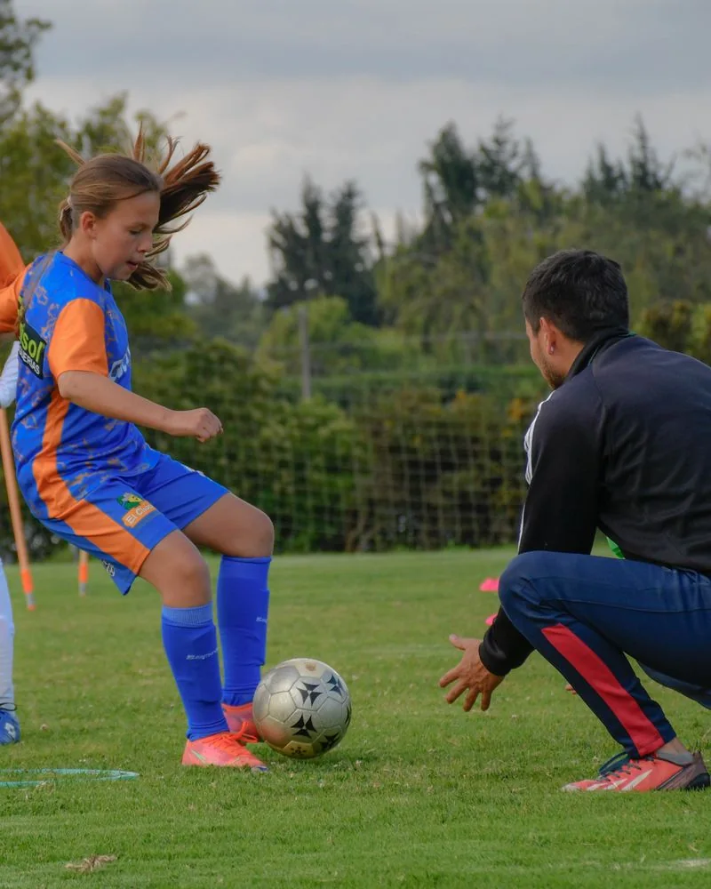
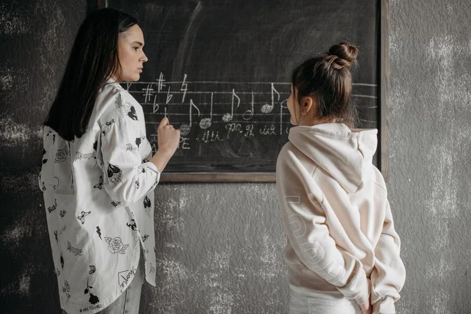
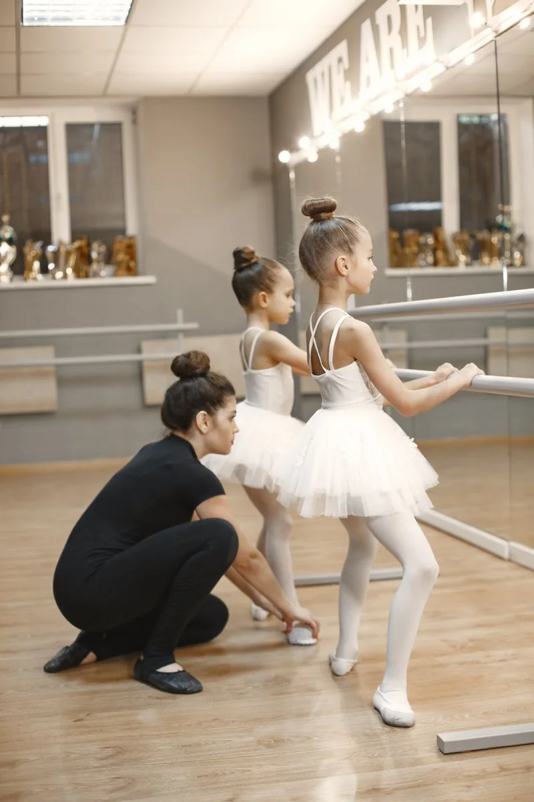
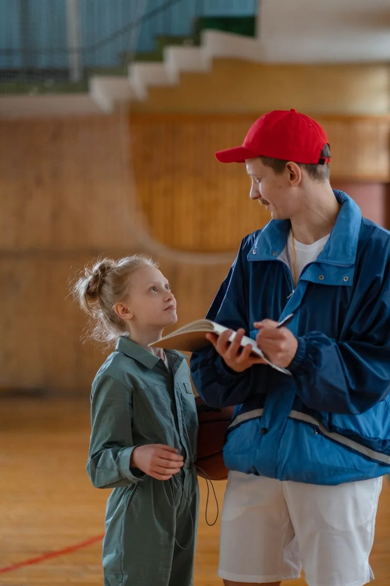
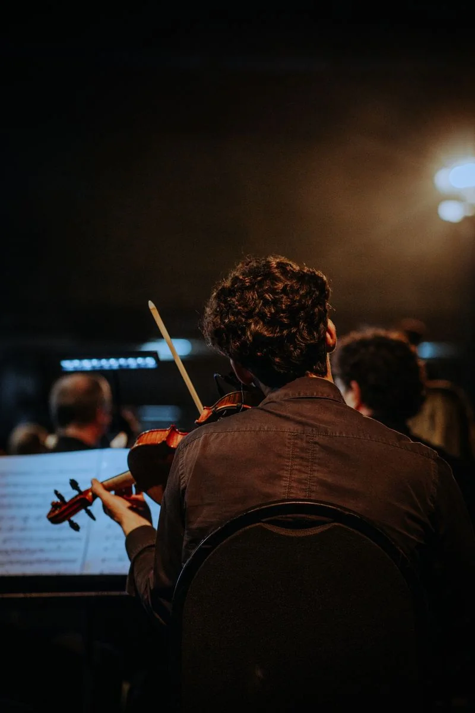

Öğrencinin yaşı, ilgi alanları, eğitim geçmişi ve seçmek istediği sanat veya spor alanı belirlenir.
YETENEK SİSTEMİ
Nova Yetenek Taraması Sistemi
ÇOK AŞAMALI KEŞİF
Bugünü değil,
gelişim ihtimalini görüyoruz.
Nova’ya kabul süreci, öğrencinin yalnızca bugünkü performansını değil, gelecekteki gelişim potansiyelini anlamaya yönelik çok aşamalı bir yetenek taramasıyla gerçekleştirilir.

SÜRECİMİZ
Kartlara tıklayarak sürecin aşamalarını sırayla inceleyin.
Koordinasyon, denge, ritim, dikkat, hareket kabiliyeti, öğrenme hızı ve temel motor beceriler değerlendirilir.

Öğrenci seçtiği alana göre özel değerlendirmeye alınır. Sanat alanında: ritim, müzikalite, ifade gücü, sahne duruşu, hareket hafızası ve yaratıcılık. Spor alanında: çeviklik, hız, denge, koordinasyon, reaksiyon, temel teknik beceri ve oyun algısı.

Öğrencinin verilen yönlendirmeyi ne kadar hızlı uyguladığı, yeni beceriyi öğrenme kapasitesi ve gelişime açıklığı gözlemlenir.

Sonuçlar; ölçme-değerlendirme uzmanları, akademisyenler, sanatçılar, sporcular, antrenörler ve branş uzmanlarından oluşan seçici kurul tarafından birlikte değerlendirilir.

Öğrencinin yetenek profili oluşturulur; uygun bulunan öğrenciler Nova’nın sınırlı kontenjanlı uzun vadeli gelişim programına kabul edilir ve bireysel gelişim planı hazırlanır.

TARAMA ALANLARIMIZ
TEMEL YAKLAŞIMIMIZ
Nova’da amaç en hazır çocuğu değil, doğru yönlendirmeyle en güçlü gelişimi gösterebilecek potansiyeli keşfetmektir.